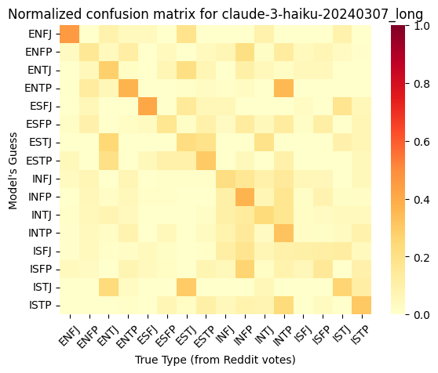

My middle school Home Economics teacher sat the class down in the computer lab and had us take a multiple-choice test where we answered agree/disagree to statements like “I am the life of the party” and “some consider me a perfectionist”. At the test’s conclusion, I learned that according to the Myers Briggs Type Indicator framework I was “INTP”, and thus best-suited for a career as a forensic analyst or nuclear engineer. At eleven years old, it’s reassuring to hear that you’re not some historically unprecedented mutant, but rather a wholly anticipated “type of guy” (one of sixteen possible types) subject to catalogue and career suggestion.
Apart from the moment of respite from preadolescent angst the episode failed to have a lasting effect on my self-image, but a number of people who I respect take MBTI classifications seriously. A close friend of mine who I consider an especially incisive judge of character claims that the basic framework is good but assessing personality via multiple-choice test is nonsense: you can only get a real estimate of someone’s type by analyzing their writing. This is a problem if you’re trying to create an online quiz to assess personality in 2014, but in 2024 we have large language models that analyze writing more accurately than the average human can. So: how do LLMs stack up against humans when it comes to assigning MBTI types?
TLDR: LLMs tend to roughly agree with human MBTI guesses.
Is MBTI real?
As of April 9, 2024, the Wikipedia page for Myers-Briggs Type indicator uses the word “pseudoscientific” in the first sentence, and the second paragraph is wholly dedicated to denouncing its accuracy.
The tone is more akin to the article on astrology than Big Five personality traits, which is weird because even my high-minded skeptic friends that endorse the latter while repudiating the former will also uncritically describe themselves with MBTI terms. I really thought that I was doing something bold and edgy by questioning the empirical basis of MBTI, but apparently scientific consensus has just not yet reached my homies.
On the other hand, the edit history for the MBTI wikipedia article shows controversy just starting to heat up in 2024. My MBTI friends tend to refer back to Karl Jung’s original theory of personality types that inspired the type inventory, and even claim that Myers was incorrect in her interpretation to the point of getting her own type wrong. So maybe Jung used his piercing psychological insight to accurently identify sixteen timeless personality archetypes, and everything that prompts accusations of antiempirical pseudoscience only set in when people started using the framework to assign careers to middle schoolers.
The subreddit r/MbtiTypeMe contains posts where people attempt to assign MBTI types to people based solely on their selfies, which, I guess you could make some argument about determining people’s personality from the way that they dress but it generally seems like something that you shouldn’t be able to do if MBTI were a meaningful personality assessment framework and not just some people having a laugh. Yet there’s also a number of posts where people describe themselves in detail and other people comment equally-detailed and thoughful proposals for their type. Of course, you can find an equal amount of thought and effort put into r/astrology comments, and I still don’t expect “guess my astrological sign from my self-description” posts to yield accurate results unless the author was already aware of the stereotypical traits of their sign and playing up those aspects of their personality. But r/MbtiTypeMe offers an easy source of data for comparison to LLMs and my MBTI friends don’t consider their analyses entirely without merit so we may as well give it a go.
Data extraction
There used to be an excellent API for scraping Reddit content called Pushshift. In 2023, the Reddit team realized that it would be lucrative to force the language model companies training on their content to pay for access, and this API is now heavily restricted.
Luckily I found a torrent of Reddit data split by subreddit containing posts and comments up to December of 2023. The date is important, because we want to conduct our LLM analysis only on data that the language model hasn’t potentially been trained on, and guarantee this by using data past the cutoff date of the most recent LLM that we’ll be evaluating (Claude 3, August of 2023).
Reddit submissions and comments come in seperate torrents, so I wrote a short Python script to take all submissions past the Claude 3 cutoff date and associate them with the corresponding comments in a large json file. I filtered out all submissions that had no comments, as well as submissions under 800 characters, since those are probably low-information-content submissions along the lines of “type me based on my selfies.” I ended up with 433 submissions in total.
r/MbtiTypeMe commentators don’t submit their guesses in any standardized format, so there’s no neat way to parse out the specific four-letter type that they assign. But language models excel at these sorts of summarization tasks, so I hit Claude Haiku (fast and cheap, but effective) with a bunch of requests using the following template:
Task: given a comment in r/MbtiTypeMe, determine what four-letter MBTI types the author assigns to the original post. If the post does not contain enough information to determine, reply N/A. Do not explain your answer.
Examples:
Comment: “Definitely not Fe domshow both Se and Ne but you mentioned that you have ADHD which can bias towards Ne..” Type: ESTP
Comment: “INxP?” Type: INFP/INTP
Comment: “Fi is more about values, like your sister. Any mbti is capable of emotions.” Type: N/A
Comment: “What are your thoughts on FiNeSiTe?” Type: INFP
Comment: “Got the airdrop too. Anyone else feeling lucky today?” Type: N/A
Comment: “Hmm mbti with good looking, look like you try to be original your eyes is wide open and a bit intense,would say you have lot of energy behind this picture, look like if you were talking you don’t shy /INFP/ENFP but not sure about the last letter if totally wrong or not” Type: ISFP/INFP/ENFP
Comment: “The stuff pointing to ISFJ are really weak, not enough to even say your Si is particularly developed compared to other INxPs” Type: N/A
Comment: {comment to analyze goes here} Type:
To get a sense of each guess’s “reputability”, I weighted each guess by the number of upvotes that the comment recieved, divided by the number of types that the comment assigned. So if a submission recieved one comment assigning “INTP/INFP” that recieved 3 upvotes, and one submission assigning INFP that recieved 1 upvote, the final spread of guesses is 1.5 INTP, 2.5 INFP.
The weighted type assignment for my whole cleaned dataset of r/MBTITypeMe comments between 1/9/2023 and 12/12/2023 looks like this:
According to the incredibly fake-looking pop psych websites that come up when I Google “MBTI types by rarity”, this does not reflect trends in the general population. Notably, INTJ and INFJ are supposed to be the rarest personality types, but are among the most commonly guessed here. People willing to type over 800 characters in order to have strangers online assign them a personality type are unlikely to reflect the median human, so I’m not particulalry shaken by these results.
LLM Analysis
I selected four LLMs to test: OpenAI’s GPT4 and GPT3.5-turbo, and Anthropic’s Claude 3 Opus and Claude 3 Haiku.
For price and ease of analysis, I first asked the LLMs to produce only four-letter guesses:
def make_brief_prompt(text):
prompt = f"Analyze the MBTI type of the subject in the following text. Respond with CONCLUSION: guess, i.e: CONCLUSION: ESFP.\n\nText: \"{text}\"\n"
return [
{
"role": "user",
"content": prompt,
},
{
"role": "assistant",
"content": "CONCLUSION:"
}
]But LLMs are known to perform better when prompted to reflect before answering, so I also included a prompt designed to elicit a long response while still providing an easily parsed-out four-letter answer:
def make_long_prompt(text):
prepend_conclusion = False
prompt = f"Analyze the MBTI type of the subject in the following text. {'Prepend' if prepend_conclusion else 'Conclude'} your analysis with CONCLUSION: guess, i.e: CONCLUSION: ESFP.\n\nText: \"{text}\"\n"
return [
{
"role": "user",
"content": prompt,
}
]I only hit Claude 3 Haiku with the long prompt, because tenouousness of this project’s premise made the prospect of spending any more money than I’d already allocated unappealing.
Distribution of guesses for each type:
You don’t see as much of the INFP/INTP bias of the human guesses here, but you don’t see many other patterns emerging between model guesses either.
Here’s model guesses scored against human guesses:


There’s visible correlation, which looks a litle stronger for the larger models (GPT-4 and Claude Opus). Increasing the output length doesn’t seem to affect correlation much for GPT 3.5.
LLM Certainty about MBTI types
When an LLM assigns “INTP” to a submission, what is the probability that it could have assigned some other type instead? Is there really some strong “INTP” signal that it’s picking up on, or it it just guessing?
OpenAI’s models offer the ability to evaluate the model’s “certainty” about each token by returning the log softmax, which corresponds to the natural log of the token’s expected probability. The first token encodes the 2-3 letters of the four-letter guess, and thus offers a reasonable proxy for the model’s certainty about its MBTI assignment as a whole. By taking the average of e to the power of the first token logit value, we see that GPT-4 assigns its first token guess relative probility 0.87, and GPT-3.5 assigns it 0.7
But as a sanity check, I also asked GPT-3.5 and GPT-4 to guess the Zodiac types of the first 65 submissions in the dataset. If we assume that Zodiac has no real correlation with self-description, then we’d expect our model to be more uncertain in its first token guess, not sure whether it should begin “Ca” for Caricorn or “Ge” for Gemini.
GPT-4 refused to assign a zodiac type to 54% of submissions, citing not enough information (an answer that it never gave when asked to assign MBTI type). But when it did assign a type, the relative probability was 0.85. GPT-3.5 never declined to guess, but was also more certain about Zodiac than MBTI, with relative probability 0.67. That’s about equal to their certainties about the first MBTI
But deviation from expected probability distribution is a known feature of instruction-tuned language models: when asked to pick a random number, they will assign high confidence to one or two specific values. Non instruction-tuned models don’t suffer as much from this fate.
If instruction tuning is affecting model certainty, is it also affecting model guesses? What would happen if I ran my data through a non-instruction-tuned model like DBRX-Base? At this point I’ve run out of energy to pursue the topic further, but interested parties can find my data here.
Conclusion
The correlation between human and LLM guesses suggests there’s some signal that both parties are picking up on. Does this mean that the MBTI-skeptical Wikipedia editors are just haters, and you actually can classify people into one of 16 Jung-inspired personality categories?
Well, the people who submit to r/MBTITypeMe aren’t randomly sampled from the population. The fact that they’ve specifically sought out this subreddit may indicate that they’re for some reason especially straightforward to type. A number of posts list previous results that the author got on MBTI tests or otherwise indicate that the author finds that the MBTI system accurately captures their personality.
I mentioned earlier that the Jungian perspective on MBTI is different from the common contemporary perspective, and a major difference is analyzing personality via “functions” vs. considering traits along the four seperate axes used to construct the four-letter personality acronyms. The latter is how I naively understood the system: extraversion/introversion is a scale, most people are somewhere in the middle, and your MBTI type starts with an “I” or an “E” depending on which end of the scale you end up on. Feeling/thinking likewise seem to have an intuitive gradient between sensitive hippies and icy Vulcans. Intuitive/sensing and judging/percieving are harder to point to, but vaguely point to something about practiality vs theory and action vs deliberation?
But the way that my incisive-judge-of-character friend explains it, Jung’s original scheme identified four “cognitive functions”: thinking, feeling, sensation, intuition. These cognitive functions could either be directed in towards onesself, or out towards the external world. This gives us eight combinatorial choices for a “dominant function” representing a person’s most frequently used function and its direction. The Myer’s Briggs framework supplements this with an “auxiliary type” with options constrained in such a way to bring us up to 16 types. INTP in in this framework has dominant function “introverted thinking” and auxiliary “extroverted intuition”.
Both online MBTI tests and users of r/MbtiTypeMe vary in whether they use the “four seperate axes” or “cognitive functions” interpretation. According to Wikipedia, the former interpretation has higher psychometric validity, which is funny because the most thought-out analyses come from people who subscribe to the latter:
I’d put as much credence in LLM-based MBTI guesses as I would in MBTI as a whole, which is “not very much”. For entertainment, I put a few of my writing samples into Claude Opus and it consistenly guessed INTP.